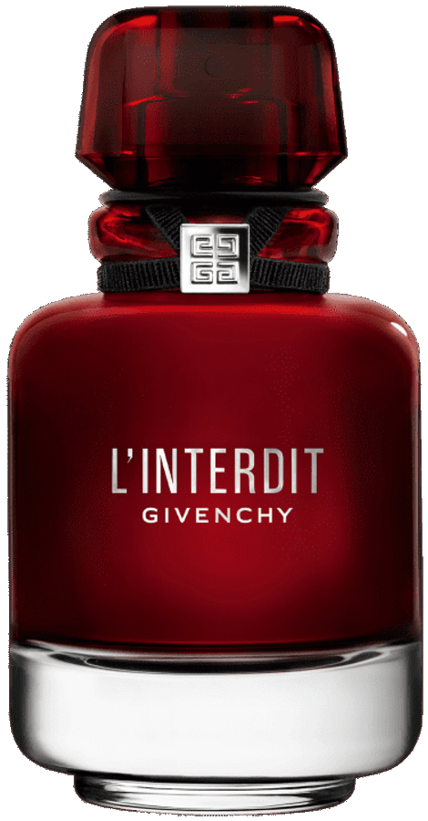

RENDA-SE AO DESEJO ARDENTE
L'Interdit Eau de Parfum Rouge
L'Interdit Eau de Parfum Rouge é uma fragrância sensual que revela um buquê floral branco tingido de vermelho profundo. Flor de laranjeira luminosa e jasmim são inflamadas com um acorde vermelho picante de laranja e gengibre.
Descubra a magia envolvente do Perfume Givenchy L'Interdit Feminino Eau de Parfum Rouge, uma fragrância que transcende a simplicidade do floral branco com um toque arrebatador de vermelho profundo.
L'Interdit Eau de Parfum Rouge é mais do que uma fragrância; é uma reinvenção corajosa da icônica Underground Flower.
Immerja-se na visualidade arrebatadora do frasco de L'Interdit. Um tributo ao icônico vermelho Givenchy, o frasco é mais do que uma embalagem; é uma obra de arte translúcida que incendeia o interior com um verniz apaixonante.
L'Interdit é mais do que um perfume; é um tributo à feminilidade ousada e um convite para desafiar limites.
DESCUBRA